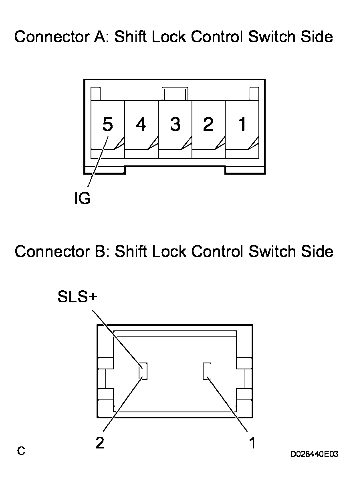
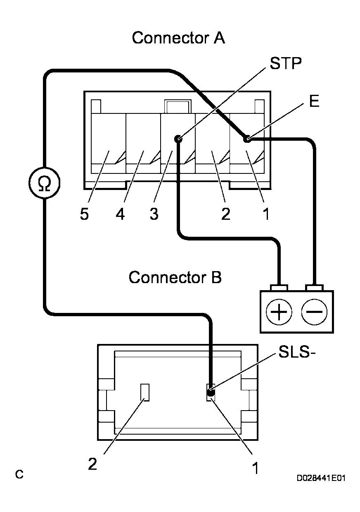

Shift Lock System: Inspection
WARNING: This page is about a different variant/trim than selected.
- INSPECT SHIFT LOCK CONTROL SWITCH
- Disconnect the connector A and connector B of the shift lock control switch.
- Measure the resistance according to the value(s) in the table below.
HINT:
"Switch ON" means push the button on top of the switch.
NOTE: Match the tester probe with current direction as the shift lock control switch circuit has a diode.Standard resistance
TESTER CONNECTION SPECIFIED CONDITIONTester Condition Condition Specified Condition A5 (IG) - B2 (SLS+) Switch ON Below 1 Ω A5 (IG) - B2 (SLS+) Switch OFF 10 kΩ or higher 
Courtesy of © TOYOTA, LICENSE AGREEMENT TMS1002If the result is not as specified, replace the shift lock control switch.
- Connect the battery's positive (+) lead to terminal 3 (STP) and the negative (-) lead to terminal 1 (E).
- Measure the resistance according to the value(s) in the table below.
Standard resistance
TESTER CONNECTION SPECIFIED CONDITIONTester Condition Condition Specified Condition A1 (E) - B1 (SLS-) Connect battery Below 1 Ω A1 (E) - B1 (SLS-) Disconnect battery 10 kΩ or higher 
Courtesy of © TOYOTA, LICENSE AGREEMENT TMS1002If the result is not as specified, replace the shift lock control switch.
- INSPECT SHIFT LOCK SOLENOID
- Disconnect the solenoid connector.
- Connect the battery's positive (+) lead to terminal 2 (SLS+) and the negative (-) lead to terminal 1 (SLS-).
- Check that the operating noise of the solenoid can be heard.
If the solenoid does not operate, replace the solenoid.